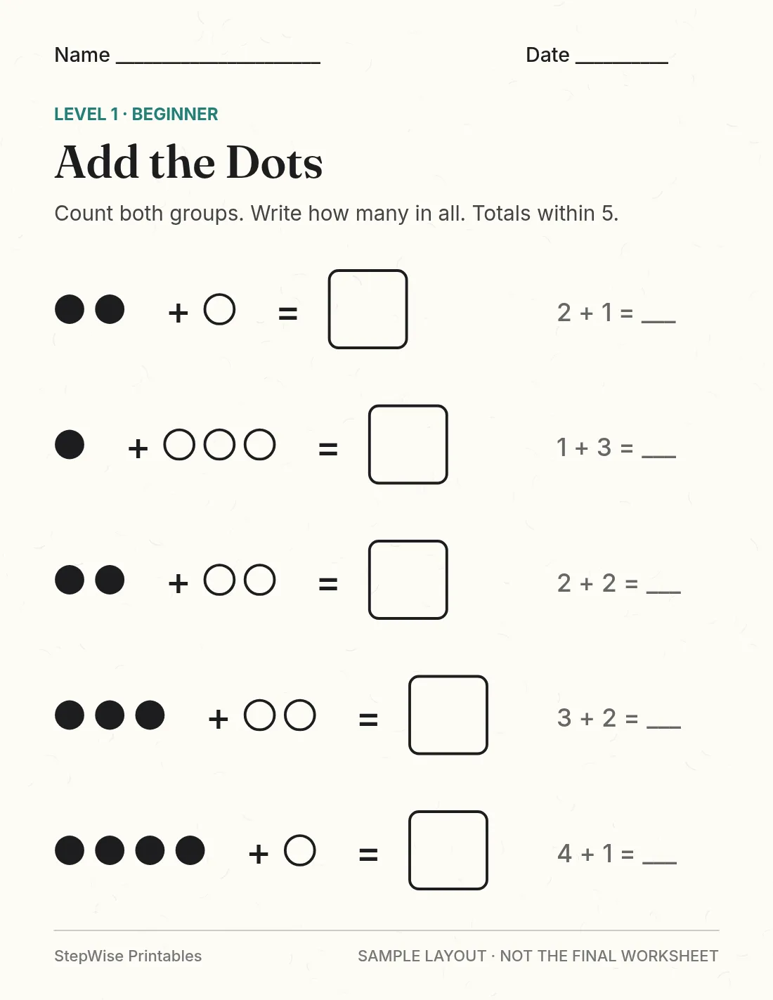

The image above is a sample layout. It is not the final worksheet. Real page previews will be added when the PDF is finished.
Kindergarten Addition: Beginner
Addition Within 5
Count two small groups and write how many in all. Every total stays at 5 or below.
$3.99 Instant PDF · Page count comes with the final file
Buy now: $3.99Checkout isn't live yet. No payment has been taken. Get the free sample in the meantime.
- Print at home in black and white
- Answer key included
- One skill, one level
Questions parents ask
What will my child practice?
Your child counts two small groups, puts them together, and writes the total. A page might show 2 dots and 1 more dot, then the number sentence 2 + 1 = 3. Totals stay at 5 or below.
Is this a suitable starting point?
This is a good starting point if your child can count to 10, recognize the numbers 0–5, and count objects one by one.
How does practice progress?
The pages move in small steps: count each group, combine the groups, then match the picture to a number sentence. This pack does not jump ahead to stories.
The full kindergarten path is:
- Count groups
- Combine
- Pictures to equations
- Simple stories
What parent guidance is included?
Stay nearby. Let your child count out loud. If they skip, ask “How many are in this group?” before they write the total. Buttons, coins, or cereal pieces can stand in for the dots.
When should we repeat a skill, and when should we move on?
Stay with this pack if you are helping with most of the problems. Move to the Intermediate pack when adding up to 5 with pictures feels easy and your child can say the number sentence.
What’s included?
A printable PDF for US Letter paper, made to print in black and white, plus an answer key. The page count will be added when the final file is ready. The picture on this page is a sample layout, not the finished worksheet.
Informed by Common Core K.OA.A.1, which asks children to show addition with objects and drawings, and K.OA.A.5, which is adding within 5. Florida’s B.E.S.T. kindergarten benchmarks also introduce addition with objects, drawings, and equations. This pack keeps the totals at 5 or below. We are not endorsed by the groups that publish those standards. Read them here: Common Core kindergarten addition and Florida B.E.S.T. mathematics.